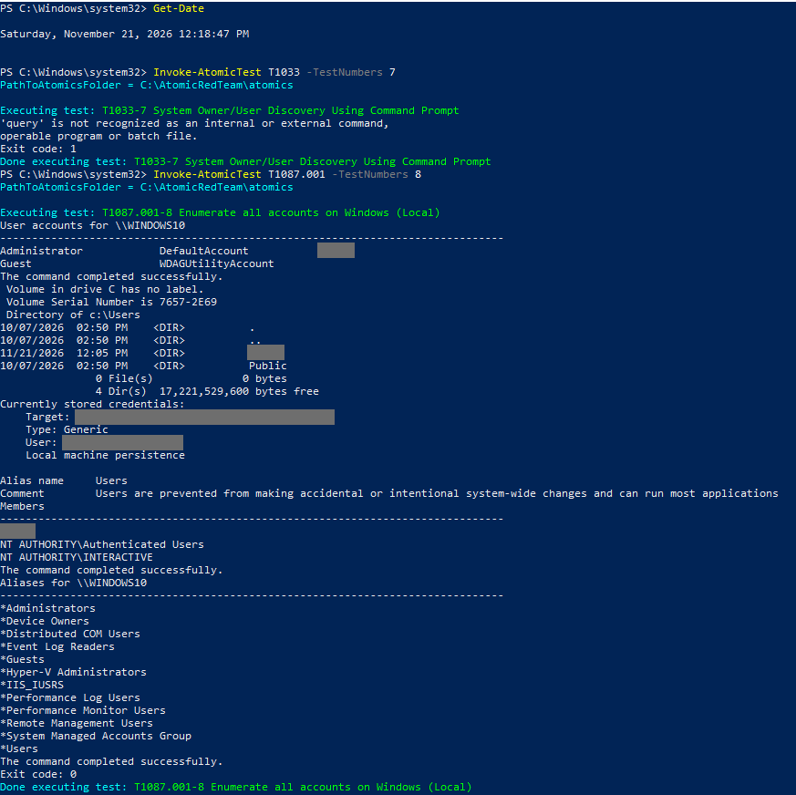

01 · Discovery commands
Three or more different local discovery tools (whoami, net, systeminfo, cmdkey) run on the same machine within 3 minutes.
Attack
Invoke-AtomicTest T1033 -TestNumbers 7
Invoke-AtomicTest T1087.001 -TestNumbers 8
Invoke-AtomicTest T1082 -TestNumbers 1Detection (SPL)
Final version
index=sysmon EventID=1 Image IN (*\\whoami.exe, *\\net.exe, *\\systeminfo.exe, *\\cmdkey.exe)
| sort _time
| streamstats time_window=3m dc(Image) as komutlar by host
| table _time, host, Image, komutlar
| where komutlar > 2False positives and tuning
The broad search returned 7 whoami events I didn't expect, even though none of the tests ran whoami. Looking at the parent process ID, I saw they all came from the PowerShell that launched the test commands: Atomic Red Team runs its own whoami 1-2 seconds before each test. This surprised me the most, because it behaves just like an attacker: it first checks who it is, then acts accordingly.
I still kept whoami in the list, because real attackers use it a lot too. A whoami running on its own doesn't trigger the rule, because the rule counts different tools. I didn't count net1.exe: net.exe starts it every time it runs, so every command would be counted twice.
Fixes
In my first attempt I used bin _time span=10m. A fixed bucket rounds event times to the given span. That makes sense for visualization, but the 10-minute bucket merged two separate runs and split one of them in two. When I want to know what happened within a certain time, streamstats is a better choice: for each event, it looks at the events in the given window before it. Without sort _time the window looked the wrong way, because Splunk returns results newest first. Finally I added by host so each machine is counted separately.
Screenshots

query user fails because Windows 10 Home has no query.exe.
whoami; all 7 whoami events come from Atomic Red Team itself, before each test.
bin _time span=10m. Fixed buckets group two separate runs incorrectly.
by host, threshold of 3 different tools. Both runs were caught separately.Test evidence
| Test | Time (VM clock) | Result |
|---|---|---|
| Run 1 | 2026-11-21 ~12:10:30 – 12:10:53 | Caught at 12:10:42.135 |
| Run 2 | 2026-11-21 12:18:47 – 12:20:44 | Caught at 12:19:15.396 |
Lesson learned
The threshold has to be chosen based on normal activity. If I alerted on 2 different tools, every admin who runs whoami followed by net user would trigger an alert. So I set the threshold to 3 different tools. There's no real user activity in my lab, so I chose this threshold by reasoning, not by measurement. It has a cost too: discovery slower than 3 minutes can be missed.
Full details (data sources, limitations, analyst next steps; in Turkish): detections/01-kesif-komutlari.md